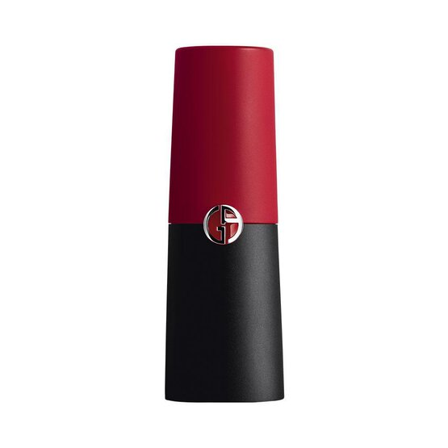

Rouge D’Armani Matte Lipstick is a long lasting matte lipstick with intensely pigmented color and coverage in a single application. Offering no compromise on comfort with 50% more pigments that a traditional matte lipstick.nIntense matte color: High concentration of pigments takes matte to new heights, dressing lips in more even, extreme color and maximum coverage. Lasting comfort: Light-diffusing gel allows for a rich matte finish that looks smooth and supple, rather than dry. Smooth application in just one stroke: Emollient paste agent, ester oils and a hydrogenated jojoba oil make for a creamy, glide-on application sensation.Matte packaging: Ultra matte bullet, sleek matte red and black packaging, iconic Armani magnetic closure.“The new formula of Rouge d’Armani Matte is remarkable and has taken everything to a new level: intensity of color, long lasting, vibrant but matte and with a weightless comfort. Used backstage, I can apply it hours before a show in the knowledge that it will stay put. And models won’t beg for lip balm!” - Linda Cantello, Giorgio Armani International Make-Up Artist
